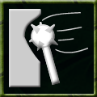

|
 |
Bash A bash is an attack that sacrifices accuracy for damage. Monsters can be quite fond of this ability, since they often don't care what they hit, as long as they break it. Bash requires a weapon to function. When bashing, a monster is less likely to hit but will cause more damage when a hit is scored. Command: N/A This ability is based on: |
Duelist | Iron Claw | Koncentrate | Shield Master | Stop Em | Two Weapons | Whirlwind | Krush | Slice | Sneak Attack | Stab | Missile Weapons | Boulder Throw | Drain Life | Thrown Weapons | Snipe